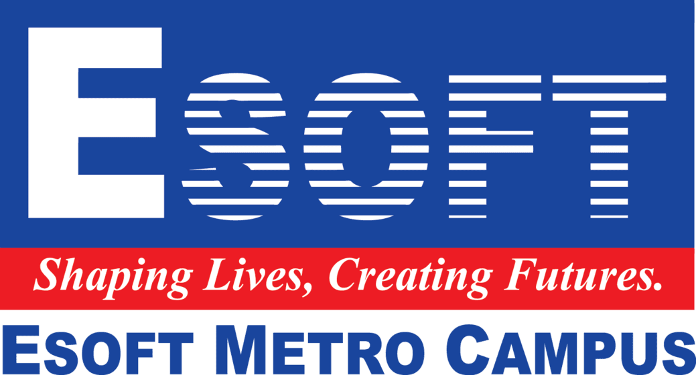
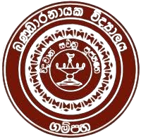

My path in technology began with a strong interest in understanding how systems work. Over time, this curiosity evolved into a solid grounding in computer science, shaped by both structured learning and self-driven exploration.
Oct. 2018 – Jul. 2023
Cumulative Grade Point Average (CGPA): 3.86/4.0 - First Class Honors - Dean’s List
Engaged in academic research, contributing to system design, and collaborating with faculty on projects in computer science, AI, and software development.

Jan. 2018 – Jun. 2018
Gained foundational knowledge in software engineering practices through coursework and practical lab sessions.
ESOFT Metro Campus
GCE A/L Examination – May 2015 – Aug. 2017
Obtained All ‘A’ (High Distinction) passes in the Physical Science stream (Physics, Combined Mathematics, Chemistry) with a Z-Score of 2.1565. Ranked 23rd in the district and 230th island-wide out of over 32,000 students in Sri Lanka.
GCE O/L Examination – Jan. 2008 – Dec. 2014
Achieved All ‘A’ (High Distinction) passes including Mathematics, Science, and English. Recognized for best performance in the college with the highest aggregate of marks.
Bandaranayake College